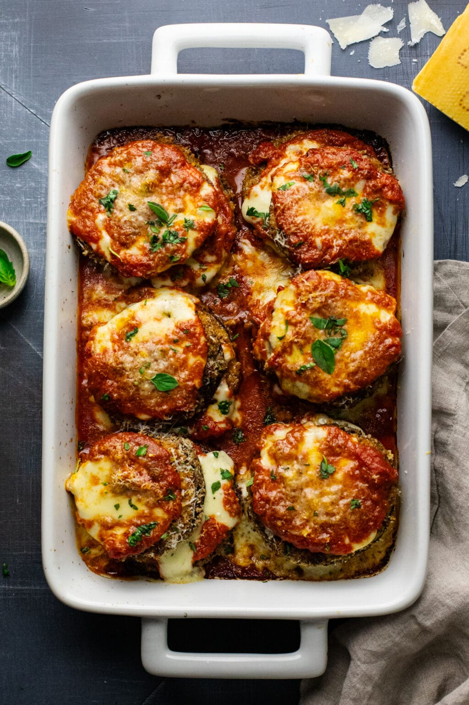

Eggplant Parmesan

What is eggplant parmesan?
Eggplant parmesan (eggplant parmigiana) is a vegetarian lasagna
that is prepared in a variety of ways depending on your location
or cultural influences, or both. This recipe is directly lifted from
another website and is only used for the express purpose of learning.
Ingredients
Eggplant
- 2 medium to large eggplants
- 1/2 cup all-purpose flour
- 3 large eggs, or 4 smaller eggs
- 1/4 cup olive oil (for fired eggplant method)
Homemade Breadcrumbs
- 6 bread slices (about 1 1/2 cups)
- 1/2 cup parmesan cheese (shredded)
- 1 teaspoon garlic powder
- 1/2 teaspoon (each) salt and black pepper
Toppings
- 1 1/2 cups marinara
- 1 lb mozzarella cheese
- 1/3 cup parmesan cheese (shredded)
- 1-2 tablespoons fresh basil (chopped)
- 1 teaspoon fresh oregano (chopped)
Steps
- Slice eggplant: remove stem from eggplant then slice into 1/4-1/2 inch thick slices.
- Sweat eggplant: arrange slices on a pan and sprinkle with a pinch of coarse salt on
both sides. Let sit and "sweat" excess moisture for 10 minutes. Pat firmly with paper
towels to dry eggplant thoroughly (wipe off salt as well).
- Breadcrumbs: toast slices of bread. Then chop in food processor until consistency is
crumbs. Mix breadcrumbs in a bowl with garlic powder, salt & pepper, Italian herbs,
and shredded parmesan cheese. Tip: If you are not making your own breadcrumbs, use 1 1/2
cups of store-bought breadcrumbs instead.
- Bread eggplant: arrange three bowls containing whisked eggs, flour, and breadcrumb mixture.
First, coat eggplant in flour on both sides, then dip into eggs, and then dip into breadcrumbs -
pack onto eggplant and then gently shake off excess crumbs. Wipe hands with paper towel then
repeat. Tip: if baking eggplant instead of frying, brush a sheet pan with 1-2 Tablespoons
of oil and arrange breaded eggplant onto pan as you coat them.
- Pan frying method: in a skillet pan, add 1-2 Tablespoons of oil at a time, and cook breaded
eggplant for 2-3 minutes on each side until golden brown. Lay on paper towels to soak up excess
oil. Repeat until all eggplant has been fried.
- Assemble: in a large casserole dish, spread a generous layer of marinara on the bottom. Then
layer: eggplant slices, mozzarella, a spoonful of marinara, and shredded parmesan. Repeat an
additional layer (breaded eggplant, mozzarella, marinara, and shredded parmesan).
- Bake: Then bake at 400F uncovered for 30 minutes until cheese is browned and melted. Top with
chopped fresh basil & oregano, and serve!
Home